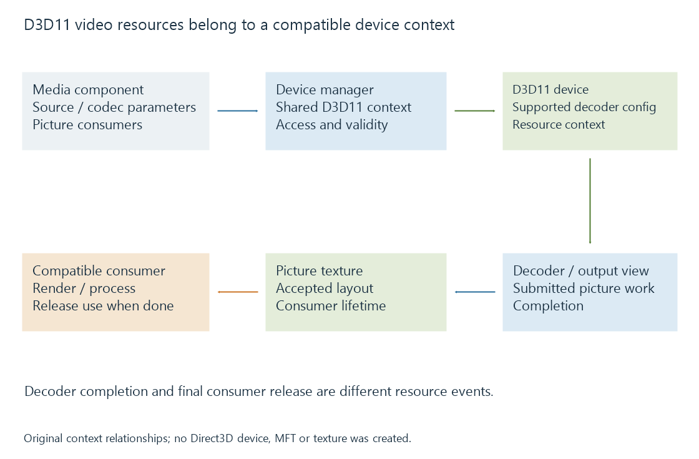

Direct3D 11 video acceleration (D3D11VA)
Direct3D 11 video acceleration uses driver-backed video interfaces and texture resources to reconstruct supported encoded pictures and connect them to compatible consumers.
D3D11VA identifies a Direct3D 11 video-acceleration path. Its video interfaces let media software request supported decoding work and manage the resulting pictures through Direct3D resources.
A Direct3D 11 graphics device is the context for that work. The application's video configuration still needs a supported decoder arrangement.
Negotiate the decoder configuration
The media path establishes an appropriate decoder profile, output format and configuration for the source. The driver exposes those possibilities through the video interfaces.
A successfully created general Direct3D device does not answer whether the selected codec profile and picture representation can be decoded.

Microsoft's Media Foundation integration describes sharing the Direct3D device through a DXGI device manager. A decoder component can then obtain the relevant device access and allocate suitable picture resources.
The decoder, its output views and its textures belong to that compatible context.
The application supplies the picture work
The decoding interface uses codec-specific parameters and compressed buffers. A media implementation parses the selected stream and submits the necessary reconstruction information.
Microsoft's documented flow brackets picture submissions with decoder-frame operations and submits the required buffers. It reuses DXVA decoding structures for supported codec profiles while using Direct3D 11's device/resource interfaces.
Container parsing and selection remain earlier responsibilities. A driver-backed decoder does not turn a movie filename into a complete playback session.
Consumer lifetime controls texture reuse
A decoded texture can be passed to a suitable renderer or processor. The decoder's completion makes the picture ready for that use; it does not prove the consumer is finished.
An original ownership model has a picture written during 0–4 ms and read by a consumer during 4–7 ms. Rewriting the same storage at 5 ms would conflict with that declared consumer use.
The times are invented, but the required ownership order is the useful relationship. Microsoft describes tracking released samples so the pipeline can distinguish available surfaces from surfaces still in use.
A CPU-only processing stage can introduce another memory/access path. A compatible GPU consumer can preserve the device-resource relationship instead.
A device change can invalidate the old arrangement
The selected device can change or become unavailable. A pipeline then needs to recreate the appropriate decoder/resources and renegotiate configuration for the new context.
Retaining an old texture pointer does not establish that it remains a valid input in a newly selected context. Device identity and resource lifetime belong together.
See Also
- DirectX Video Acceleration (DXVA2)
- Media Foundation transforms and processing state
- The hardware decode-filter-encode pipeline
- How media APIs connect applications to hardware
- Hardware decoding and software decoding